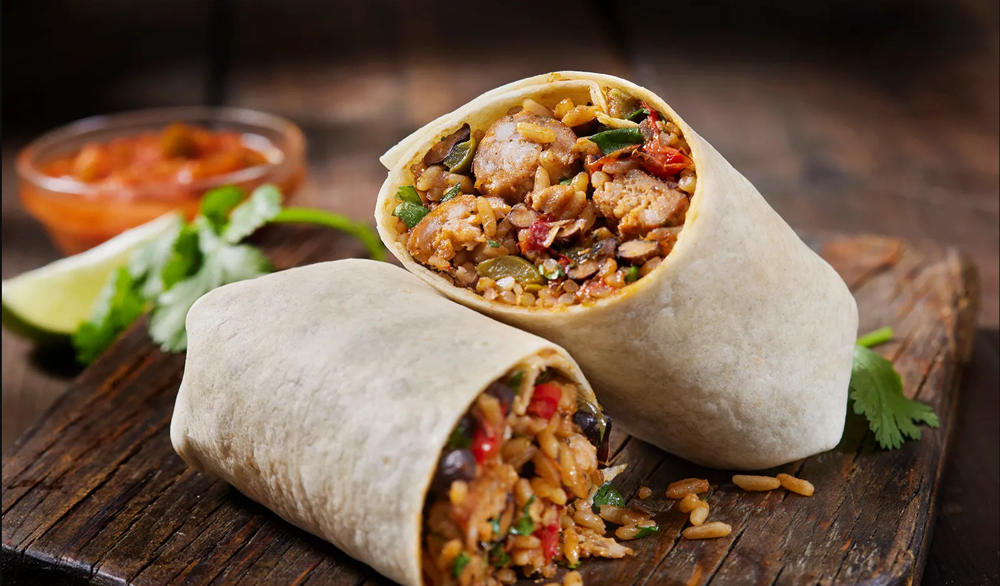

Home
Chicken Burrito

Description
The Chicken Burrito is an EXCELLENT choice for those seeking a convenient
and delicious meal on the move. Crafted with succulent chicken breast,
flavorful Mexican rice, creamy refried beans, a generous amount of cheddar
cheese, and a special blend of seasonings, it's expertly wrapped in a soft
flour tortilla. This delightful creation is then frozen, ready to be
enjoyed whenever the craving strikes!
Ingredients
- 2 tablespoons canola oil
- 1 teaspoon kosher salt
- 1 pound chicken breast, boneless, skinless
- 1/2 cup chopped onion
- 3 cloves garlic, minced
- 3 tablespoons tomato paste
- 1/2 tablespoon ground cumin
- 1 teaspoon chili powder
- 1 teaspoon dried oregano
- 2 tablespoons fresh lime juice
- 1/4 cup water
- 2 cups prepared Mexican rice
- 1 can (15 oz.) refried beans
- 2 cups shredded cheddar cheese
- 8 tablespoons sour cream
- 8 large flour tortillas (10-inch diameter)
Instructions
- Add the canola oil to a cast iron skillet on medium heat. Season the chicken with salt and cook for 4-5 minutes
on
each side. Remove the chicken from the pan.
- Add the onion and garlic to the skillet and cook for 1-2 minutes.
- Add tomato paste, cumin, chili powder, oregano, salt, lime juice, and water to the skillet. Cook and stir until
the
mixture comes to a slight boil. Reduce heat to low and cook for 5 to 8 minutes.
- Chop the chicken finely and add it back into the pan. Cook down the chicken with the mixture.
- Remove the skillet from heat and let it stand for 15 minutes or until the mixture reaches warm room temperature.
- Lay tortillas out on a flat surface.
- Divide the beans, chicken, rice, cheddar cheese, and sour cream among the 8 tortillas.
- Fold each tortilla burrito-style.
- Wrap each burrito with plastic wrap and place them in a freezer-safe ziplock bag.
- Freeze the burritos for up to 2 months.
- To reheat, unwrap the burrito from the plastic wrap and place it on a microwave-safe plate.
- Microwave the burrito for 2 to 3 minutes or until heated through.
- Enjoy your delicious reheated burrito!